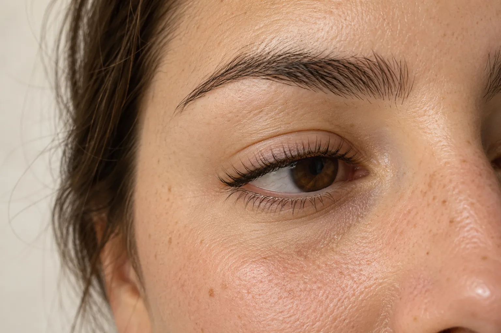
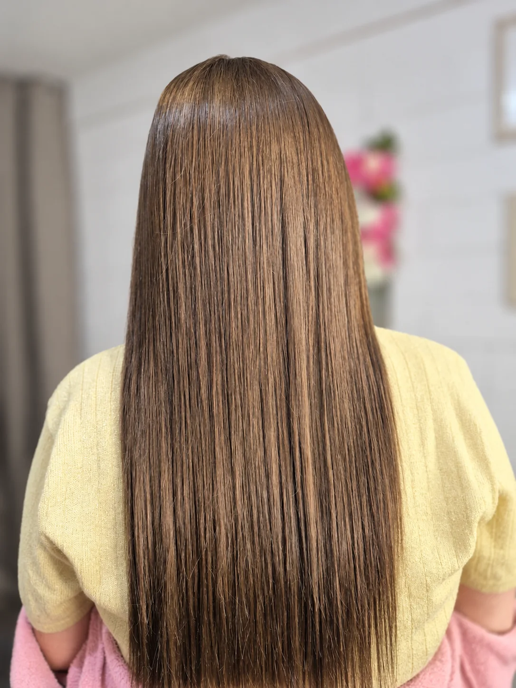
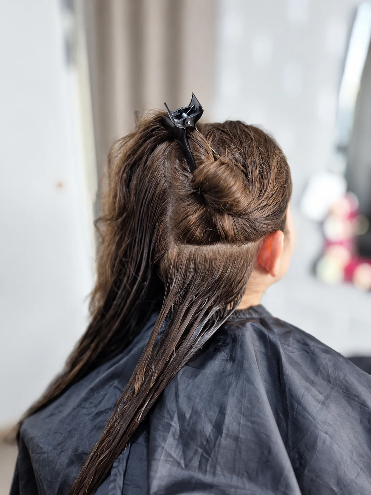
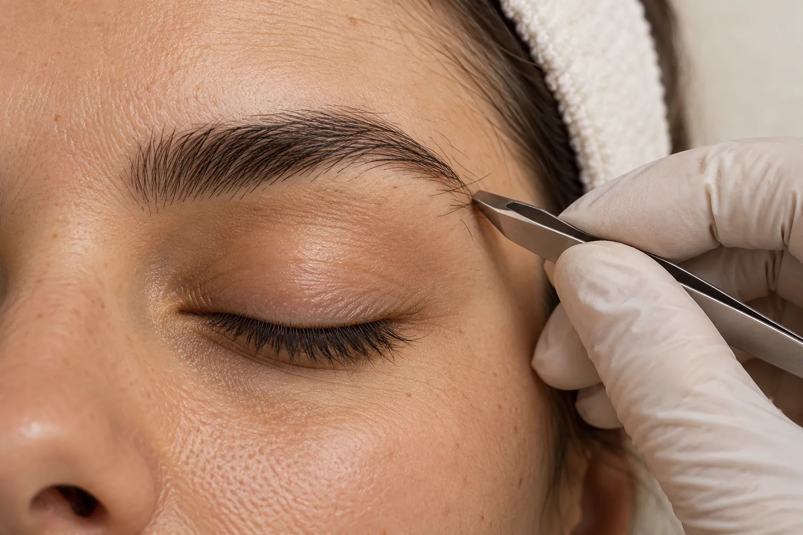
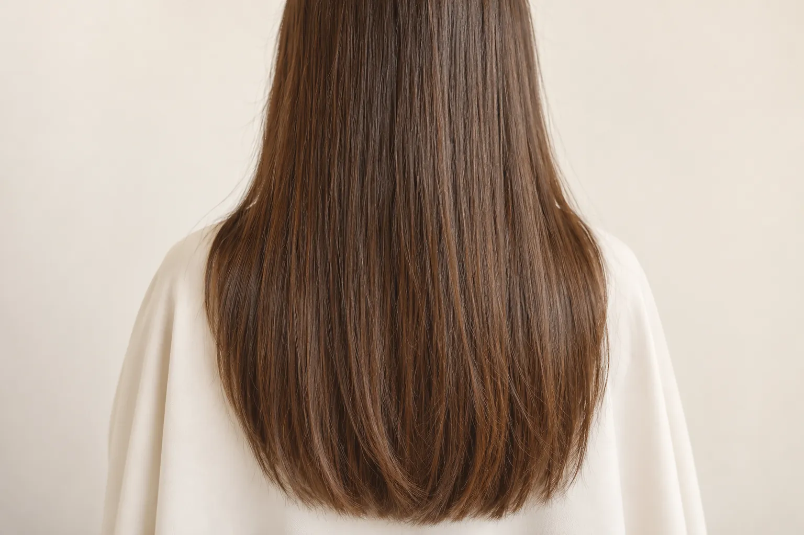
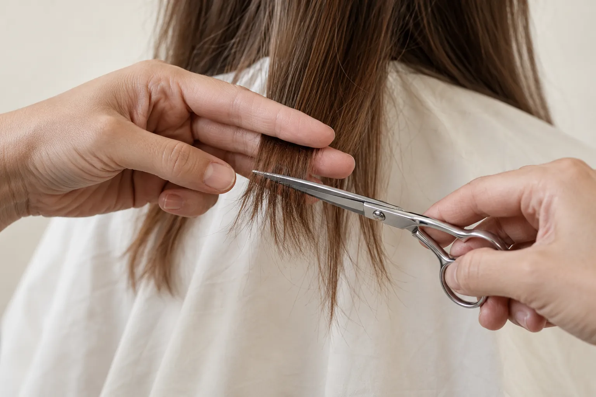
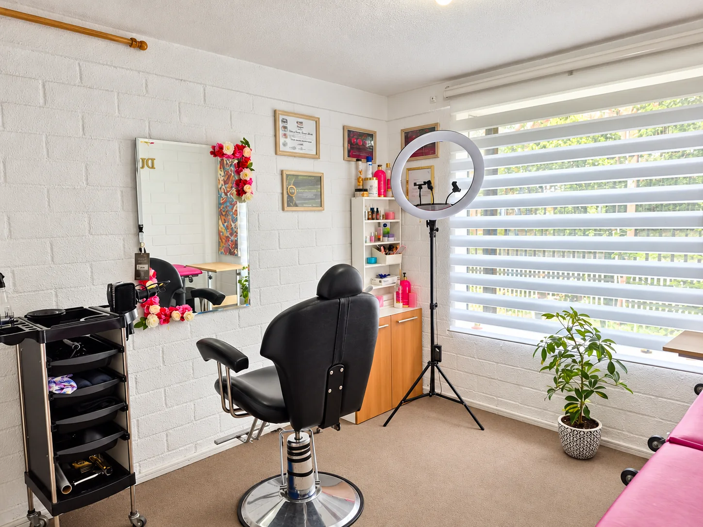

MiradaImagen referencial
Lifting de pestañas
Curva y elevación para tus pestañas naturales, sin extensiones. Tu mirada se ve más abierta desde que te levantas.
Consultar este servicioRauquén, Curicó · Con hora coordinada
Dos profesionales, un espacio tranquilo en casa y tu hora coordinada directamente con nosotras.


Cada servicio abre WhatsApp con tu consulta lista. Te respondemos con valor y horarios.

Curva y elevación para tus pestañas naturales, sin extensiones. Tu mirada se ve más abierta desde que te levantas.
Consultar este servicio
Diseño y limpieza según la forma de tu rostro. Un marco prolijo y natural que ordena la expresión sin cambiarla.
Consultar este servicio
Un cabello liso, suave y con brillo, que se peina en minutos y se mantiene ordenado por semanas.
Consultar este servicioReconstrucción profunda para el cabello seco, opaco o con frizz. Devuelve suavidad, cuerpo y brillo sin alisar.
Consultar este servicio
Elimina las puntas dañadas y renueva el largo sin perderlo. El cuidado básico para un cabello sano y parejo.
Consultar este servicioUna pausa para tu piel. Limpieza profunda, extracción e hidratación para una piel más luminosa y equilibrada.
Consultar este servicioTrabajos reales de nuestro estudio. Cada cabello es distinto: en la conversación te contamos qué resultado puedes esperar.
Cuatro trabajos reales

Ladrillo blanco, luz natural y una atención sin apuro. Te enviamos la dirección exacta al confirmar tu hora.
Cómo agendar